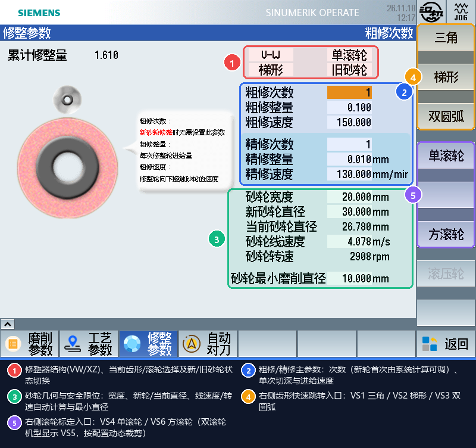
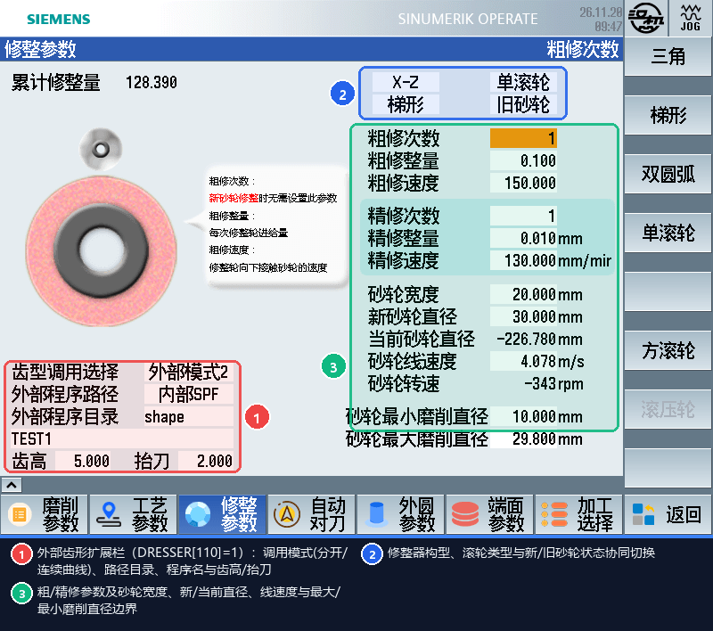
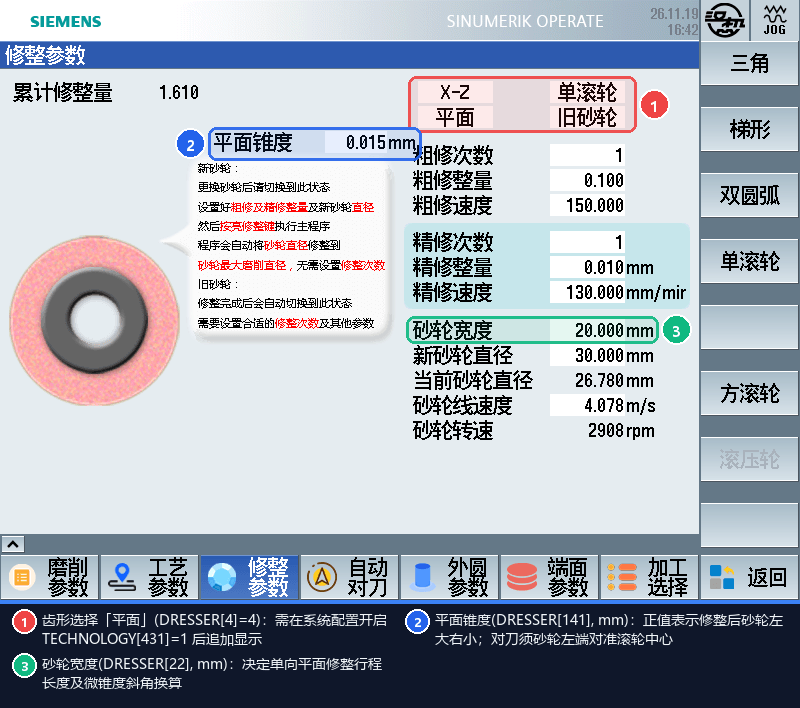

7.1 砂轮修整主参数与新/旧砂轮策略
点击任意主界面底部水平软键 HS3 修整参数，即进入 a_dress.com（Mask3）。界面左侧显示累计修整量与直观砂轮图标，右侧显示粗修/精修设定与砂轮直径保护边界，最右侧垂直软键（VS1～VS8）则是进入 齿形参数 与 滚轮校准 界面的直接入口（各软键受 HorizonJuicerCreator 选配条件动态裁剪：VS1 三角/VS2 梯形 受 ;ifIsAllShape 控制，VS3 双圆弧 受 ;ifIsArc 控制，VS4 单滚轮/VS6 方滚轮 受 ;ifIsSingleAndRound 控制，VS5 双滚轮 受 ;ifIsSide 控制）。

架构差异提示：插补式（
V-W/X-Z/U-W）与成型滚压式（V/X/ 液压摆缸）均在此主界面的顶部修整器类型下拉框切换；选中成型或摆缸后，a_dress.com右侧VS7 滚压轮自动激活，取代三角/梯形/双圆弧等插补齿形软键；若为液压摆缸机型（;ifIsVH），进入滚轮子页后可在该子页右侧使用VS8 摆缸。
1. 修整器类型与模式组合
界面最上方两个联动状态框自动匹配当前生成软件设定的硬件：
- 修整器类型（
DRESSER[0]）：- 插补模式：
VW（外/内通用 V-W 两轴）、XZ（X-Z 插补，含X-W）或UW； - 成型滚压模式：
V、X（前/后，对应DRESSER[37]=0/1） 或液压（摆缸液压成型，对应DRESSER[0]=3）； - 若设备同时配有滚压轮与单轴/双轴修整能力，可直接在
VW / V或XZ / X之间自由切换。
- 插补模式：
- 修整轮类型（
DRESSER[3]）：0单滚轮 /1双滚轮 /2方滚轮（选中成型修整器时右侧自动切为VS7 滚压轮，滚轮子页内部包含VS8 摆缸）。 - 齿形选择（
DRESSER[4]）：0三角 /1梯形 /2双圆弧（仅外螺纹全齿形且开启附加齿形时，a_dress.com主页右侧VS8扩展菜单 可用，展开二级菜单MENU_2后点击VS1可切换行星齿）；若在 机床配置 → 修整配置 中开启平面修砂轮（NC：TECHNOLOGY[431] = 1/ HMI：TECHNOLOGY[432]），齿形下拉列表会动态追加4平面（独立于DRESSER[114]；若关闭该开关而当前仍停留在4，系统载入时自动回退为2 双圆弧）。
2. 新砂轮 vs 旧砂轮 & 新砂轮插补模式
| 界面参数 | NC 变量 | 工作机理与操作建议 |
|---|---|---|
| 砂轮状态 | DRESSER[5] |
0 新砂轮：更换新砂轮后务必手动切到此态，正确录入实际 新砂轮直径（建议比卡尺测量实值偏大约 0.2 mm 留空程余量）。启动修整后，程序将依据 齿高 与 最大磨削直径 自动把砂轮修整成型并达到预定工作直径；一旦完成，系统 自动将状态切回 1 旧砂轮。1 旧砂轮：日常修整使用。按界面下方设置的 粗修次数 与 精修次数 从当前接触位继续切入修整 |
| 是否成型砂轮 | DRESSER[113] |
当 TECHNOLOGY[58]=1 且内螺纹时在 新砂轮 旁显示：0 普通：毛坯平砂轮，新砂轮开修从齿顶安全抬刀高度逐步一层层修出牙型；1 成型：砂轮出厂前已被厂家预成型出近似槽型，无需高抬刀空走，直接贴合初始轮廓快速精成型 |
| 新砂轮插补修整模式 | INI[88] |
在 机床配置（a_setting.com）设定：0 抬齿高：以牙型中心线为中心逐次向深处逼近，最常用；1 偏半个砂轮宽度：分别从砂轮左右侧面逐步向中心偏置剥除余量（适合深大齿型） |
| 新砂轮轮廓单独参数 | TECHNOLOGY[302..304] |
当开启 TECHNOLOGY[302]=1 时，粗修框右侧弹出高亮副框（LUNKUO_FEED / LUNKUO_SPEED），专用于控制新砂轮第一次拉通型面的单刀进给量与修整速度 |
3. 粗修、精修与磨削中自动修整参数对照
- 纯修整（手动点亮修整键
$A_DBB[0]启动）：顺序执行粗修次数（DRESSER[25]）×粗修整量（DRESSER[27]）/粗修速度（DRESSER[29]） ＋精修次数（DRESSER[26]）×精修整量（DRESSER[28]）/精修速度（DRESSER[30]）。 - 磨削中自动修整（工艺表
修整设定或按件修整触发）：只调用此页面的精修次数（DRESSER[26]）、精修整量（DRESSER[28]）、精修速度（DRESSER[30]）参数（注：若系统开启了扩展工艺表Mask20/30，则优先使用扩展工艺表内部各工序专设的精修进给/速度/转速！）。
4. 砂轮直径护栏、线速度与扩展显示参数
| 界面参数 | NC 变量 | 计算规则与报警限值 |
|---|---|---|
| 砂轮宽度 | DRESSER[22] |
插补修整器必须准确测量录入，直接决定左右退刀边沿位置与双侧面居中对称 |
| 新砂轮直径 / 当前直径 | DRESSER[23] / DRESSER[24] |
每次修整消耗的半径量自动扣减 DRESSER[24] 并累计到 累计修整量（DRESSER[9]） |
| 砂轮线速度 / 转速 | WHEEL_LINESPEED_DRESS[1] / DRESSER[36] |
推荐先设 22 m/s 左右再结合材料调试；若系统开了 INI[144]=1 恒转速则开放 DRESSER[36] 直接输入 RPM |
| 最小磨削直径 | DRESSER[35] |
根据砂轮法兰盘外径或内磨杆外径 + 2×齿高 加上安全余量设定。当 DRESSER[24] < DRESSER[35] 时触发 2 号报警“砂轮太小” |
| 最大磨削直径 | DRESSER[49] |
主要针对内螺纹或限孔尺寸机型：限制砂轮能顺利进入工件内孔的最大直径；新砂轮修整时会自动将外径修小至此尺寸以下。若加工时当前砂轮直径仍大于此值则报警拦截 |
| 修整角度（A 轴） | INI[153] |
需配 A 轴并开启 INI[154]=1 后在左上角出现，范围 -90° ~ 90°（默认 0°）；当磨削大导程/大螺旋升角需要消除干涉修整时设入该角度 |
| 加工中修整补偿 / 累计 | DRESSER[70] / DRESSER[71] |
当开启 DRESSER[58]=1 后显示在左上区（-0.5 ~ 0.5 mm）：每完成一次 磨削中修整，除了正常的砂轮半径补偿外，额外把磨削接触位朝坐标轴方向再微补 DRESSER[70]（其总累计值只读显示在 DRESSER[71]），常用于消除热膨胀造成的批产尺寸单向漂移 |
| 外部齿形扩展栏 | DRESSER[139] / SHAPE_MODEL[0] / STRING_ADDON[0] / SHAPE_EXTERNAL / PROCESS[123] / PROCESS[124] |
开启 DRESSER[110]=1 后显现：分别设置 齿型调用选择（0 否 / 1 左右分开 / 2 连续轨迹）、存储位置、外部程序目录、外部齿型程序名、连续曲线齿高（PROCESS[123]）与 抬刀高度（PROCESS[124]，详见 7.3 节） |
| 蜗杆专用扩展栏 | WORM_SHAPE / INI[18] |
配置 ;ifIsHasWorm 时显现：设置蜗杆廓形子程序名 WORM_SHAPE 与 蜗杆齿高（NC：INI[18] / HMI：INI[19]） |

5. 平面修砂轮（内孔磨砂轮平面与锥度修整，F_COMMON_SHAPE_10.SPF）
针对仅需将内孔磨/平面砂轮外圆母线修直（或修出微量防干涉倒锥度）的场景，最新版 Source_Library 新增了 平面修砂轮 专用模式：

- 开启与选用路径：
- 在 机床配置 → 修整配置 中开启
平面修砂轮（内孔磨砂轮修整）（NC：TECHNOLOGY[431] = 1/ HMI：TECHNOLOGY[432] = 1）； - 重新进入
HS3 修整参数后，齿形下拉框自动新增平面（DRESSER[4] = 4）。
- 在 机床配置 → 修整配置 中开启
平面锥度参数（NC：DRESSER[141]/ HMI：DRESSER[142]，单位：mm，ac4权限）：- 仅当
齿形选为平面时在主画面中上方动态显现（切换回三角/梯形/双圆弧时自动隐藏）； - 正负号与斜角定义：正值表示修整后砂轮左大右小（沿砂轮全宽
DRESSER[22]产生对应直径/半径锥度差），底层F_COMMON_SHAPE_10.SPF自动按 构造斜率平面轨迹，所有过渡圆角（COMMON_RND）与多线参数自动清零，无需进入独立齿形子页面。
- 仅当
- 关键对刀起点规范（与标准齿形不同！）：
- 标准对称齿形（三角/梯形/双圆弧）以 砂轮中心对准滚轮中心，左右对称偏移 ；
- 平面修对刀起点必须设置为：砂轮左端对准滚轮中心（
E_COMMON_SHAPE_CACU.SPF识别F_COMMON_SHAPE_10时自动切为非对称单边水平边界HORI_5_LEFT = 0、HORI_5_RIGHT = -DRESSER[22] - 1，修整长度DRESS_LENGTH = DRESSER[22]，保证单向均匀扫过整个砂轮宽度）。
- 旧版升级提示：
TECHNOLOGY[431]依赖扩展后的新版MGUD.DEF（DEF NCK REAL TECHNOLOGY[500]）；若早期的机台控制器仍使用TECHNOLOGY[420]等旧版定义，升级前务必先备份当前 GUD 数据，再导入激活新版MGUD.DEF后重新配置与恢复参数。